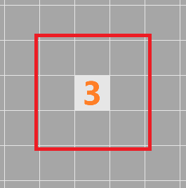
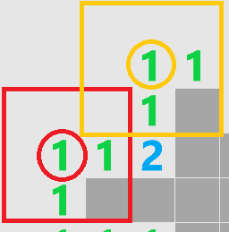
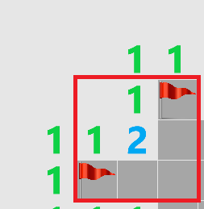

How to play Minesweeper!
This isn't the minesweeper your grandma used to play, no sir. This is Minesweeper! With two modes of play and a wraparound option, it offers a new challenge for beginning players and experts alike. If you've never played any kind of minesweeper game before, you'll probably want to start with Classic mode. If you're familiar with the basic rules, go ahead and read about Donut mode and the wraparound option.
Basic controls
- Left-click: clear a tile
- Right-click: cycle through placing a flag, placing a "?", and returning to a blank tile
- Note: when a flag is placed on a tile, you cannot left-click on it (it can't be cleared)
- Space bar: toggle tile highlighting
- While hovering the mouse over a tile, you can highlight the neighboring cells. This is especially helpful when using wraparounds.
Classic mode
In Classic mode, some of the tiles have mines underneath them. Your goal is to clear out all the "safe" tiles on the board without hitting any of the mines. You can clear a tile by left-clicking on it to reveal the space underneath. If you think a tile has a mine under it, you can right-click to place a flag on that tile. Right-clicking twice replaces the flag with a "?", in case you aren't sure you want to flag it yet, and right-clicking a third time returns you to a blank tile.
But how can you figure out where the mines are? Some of the tiles have numbers hidden underneath them, and these numbers indicate how many mines immediately surround that tile horizontally, vertically, and diagonally. In the picture below, we know that there are three mines hidden in the red box:

This isn't very helpful, so let's randomly clear a different tile on the board. This is kind of risky, but at this point we have no choice. Thankfully, we don't hit any mines and end up with this:

Ah ha! Now we can easiliy locate where two of the mines are hidden. Take a look at the image below:

Each of the indicated 1s has only one tile surrounding it, so that tile must be a mine! Let's right-click on those tiles to flag them. As we do so, notice that the 2 now has two flags surrounding it:

The 2 tells us that there are two mines surrounding that tile, but we've already located them! That means we can safely clear out the rest of the tiles surrounding the 2:

Now we can move onto solving the rest of the puzzle. Unfortunately in some cases it will be impossible to determine where a mine is, and you'll just have to guess, but most of the time you'll be able to use logic and figure out exactly where the mines are. Placing flags isn't enough though - you'll need to clear all of the safe tiles on the board in order to win.
Donut mode
In Donut mode, the goal is reversed: all the mines have been replaced with donuts, and you want to find all of them (so you can eat them, obviously). Just like in classic minesweeper, numbered tiles indicate the number of donuts surrounding them. Eat a donut by clicking on a tile with a donut underneath. It's not possible to lose in Donut mode, but you want to find the donuts in as few clicks as possible, so click wisely! Hint: use flags to mark tiles that you know do not have donuts under them.
The wrapping option
This is where things get really nuts. If you enable wrapping, the left edge of the board is connected to the right edge and the top edge is connected to the bottom edge. This means that "surrounding" tiles can be on the other side of the board! Here are some pictures with surrounding tiles highlighted:


Hint: to highlight surrounding tiles like in the pictures, press the spacebar while hovering over a tile.
About the game
Feel free to take a look at the source code for Minesweeper! here:
https://github.com/kbhadury/Minesweeper
The game is written entirely in Java.